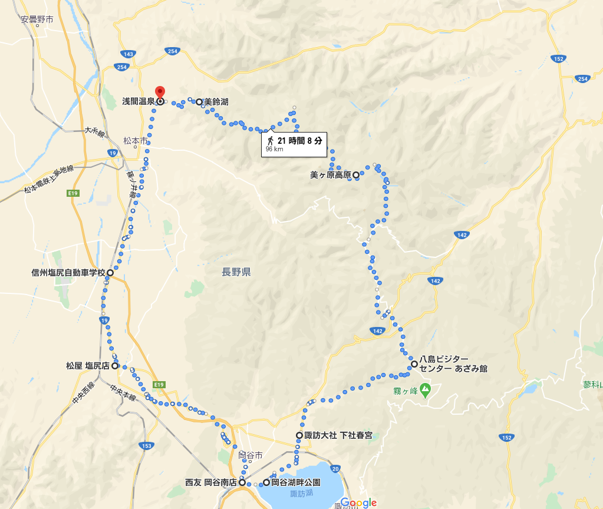
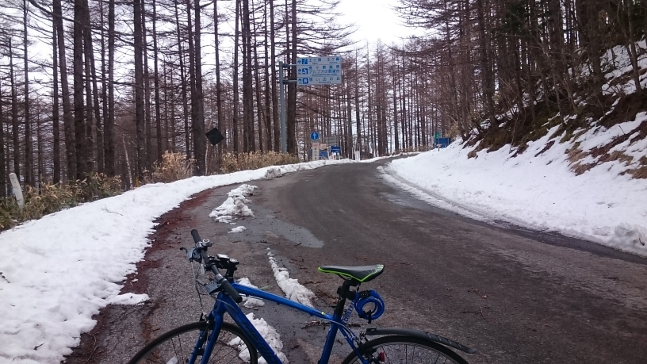
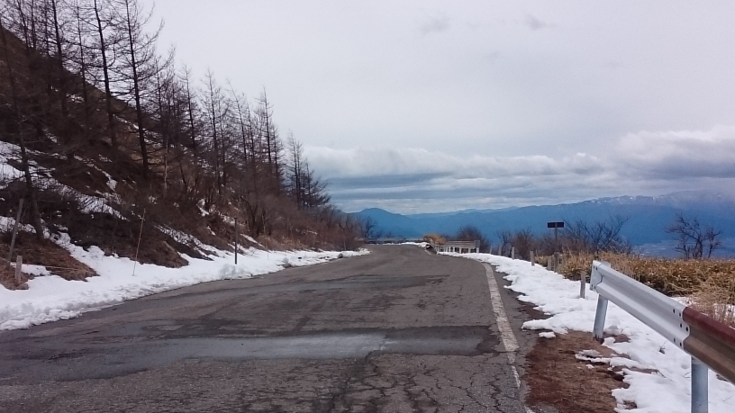
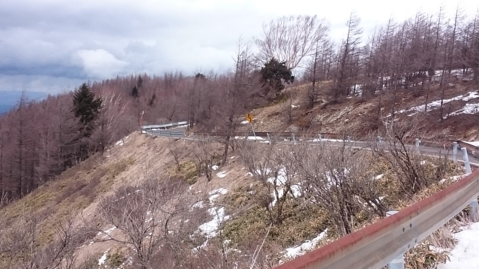
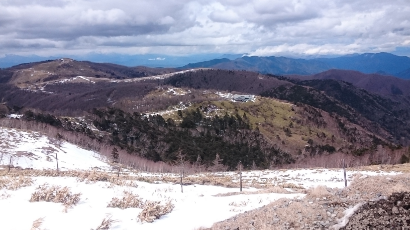
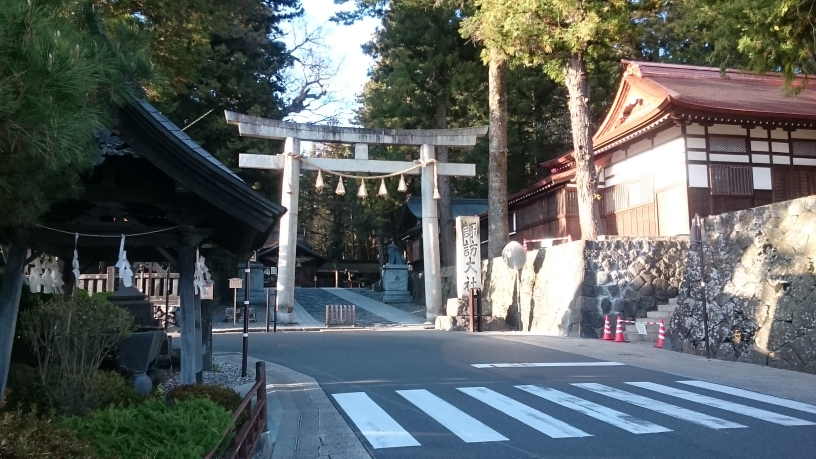
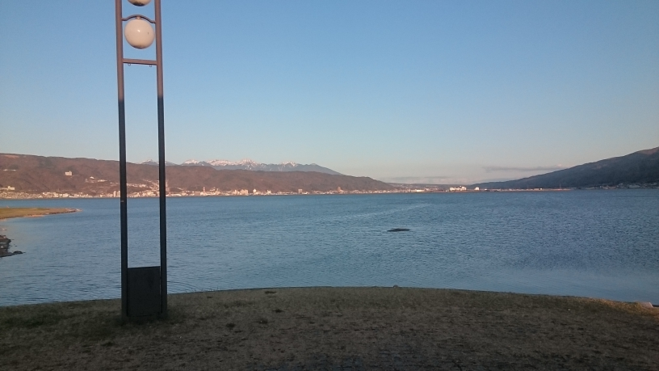
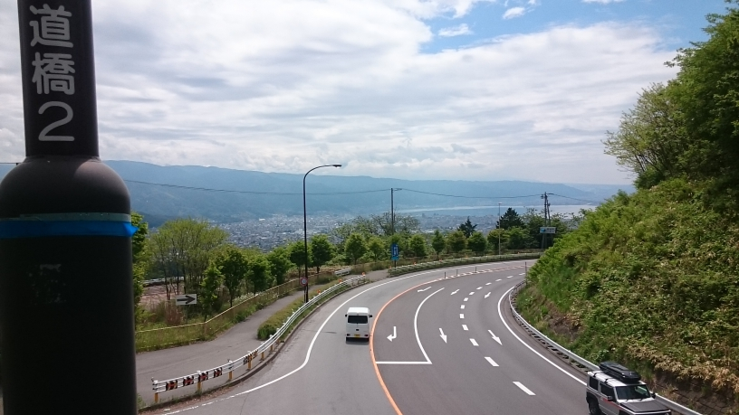

美ヶ原サイクリングページ
サイクリングの経緯について
- 
- ↑松本-美ヶ原-諏訪-松本の経路
＊ISEの帰省&自転車旅シリーズ＊ 3/9 松本→諏訪→甲府→身延→土村キャンプ適地(190km) 3/10 土村キャンプ適地(静岡市清水区)→静岡→宇津ノ谷峠→藤枝→牧之原→御前崎→浜松→(電車)→豊橋(150km) 今日は、以前甲府を経由して帰省した際のルート「富士→静岡→焼津→島田→掛川→浜松」とは変えて御前崎まで行ってみました。御前崎の灯台や景色、海鮮食材は素晴らしいものでしたので、また紹介したいと思います。
4/22 【105km】 松本→美鈴湖→美ヶ原→八島ヶ原湿原→下諏訪→塩尻→松本
地獄の坂道!? 浅間温泉から美鈴湖まで

- ↑浅間温泉―美鈴湖の途中 松本市街が一望できる。
時刻9:00。さて，さっそく浅間温泉の美鈴湖行き道路の前へと立った僕であったが，その途中の経路から，かなりヤバげな急勾配が始まりつつあった。ギアを徐々に落としていき，必死に必死に漕ぎ続ける，それでもなかなか前へと進んでいかない。そうして，浅間温泉街から外れへと行ったあたりで，何か嫌な予感がよぎったのである。「きついっ……。全然のぼらない。これは国道19号のレベルじゃない。」そんなことを思いながら上っていくこと30分。とうとう，松本市街が一望できる見通しの良い場所へとたどり着いたのであるが，かなりの量のつづら折りと勾配が続いていた。それもそのはずである。なんと，このコースはツール・ド・美ヶ原という日本でも有名なヒルクライムコースの中でも，特に急な区間なのである。そんなところを上っていくこと45分かなりの時間が経過したが，まだまだ4kmほどしか進んでいないのである。
美鈴湖に着くと，勾配も緩やかになって，きれいな湖が見えてきた。そこで，休憩すると共に，湖を観察していたのだが，どうやら釣りができるようである。釣り人が桟橋から釣り竿を投げている光景がよく目に入ってきた。それから出発することにしたのだが，いくらか分岐点があり，どれが上田へと続く武石峠への道なのかで少々迷ったが，そこへと続く道は，静かで急で，少し有れている林道であった。少々の動揺を抱きながら，地面を蹴った。
坂道続く とうとう分岐点が見えてきた。
- 
- ↑武石峠 上田への分岐ルートがある
こうして，美鈴湖を後にして，ひたすら先へと進んだのだが，しばらくずっと，急勾配が続いていた。美鈴湖までの勾配に比べるとだいぶ楽な勾配であったのだが，1時間45分ほど漕ぎ続けていると，ただただ単調な林道ゆえ，いつ頃着くのだろうかと，不安な気持ちになってくるのである。さらには，4月の下旬とはいえ，標高1000mを越える道となっている美ヶ原林道，途中から雪が残ったままとなっている箇所が続くことになった。そうしてたどり着いた分岐点。本来ならば分岐して上田を目指すところなのだが，あいにくの通行止めであった。
美ヶ原高原へ到着
- 
- ↑美ヶ原高原写真1
- 
- ↑美ヶ原高原写真2
- 
- ↑美ヶ原高原写真3
どうにか迂回していくことができないかと考えたのだが，その道は，一度美ヶ原を西から東に抜けて，そこからさらに北上していくという道であり，かなりの遠回りとなっていた。さらには，時間も押していたので，結局あきらめることにして，霧ヶ峰の方へとよって以降と考えた。さらには，地図を見る限り，白樺湖なるところがあるようであったので，行けたらそこまで行きたいということを考えていた。そうして走り続けていくと，徐々に大きく迂回するようになり，かなり見通しの良いところへと出た。とうとう頂上付近なのであり，森林限界も越えていたのであった。そして，思い出の丘，観光案内所と進んで行くと，自動車立ち入り禁止区間があった。この際，自転車はどうなのかというと，道路交通法上，自転車も軽車両である。仕方なく雪道を押して歩いていくこととなった。なお，その時の時刻は12:30であった。
ひたすら歩いていくと，アンテナやホテルが見えてきた。そこには「王ヶ頭」という札が立っており，標高は2034mとのことであった。自転車で来る中で，人生初の標高である。さらに先に進むと，牧場もあったが，今はただの雪なので，そのまま進み，ビーナスラインへと着く抜けた。結果，1時間くらいかかった。
八島ヶ原湿原まで
温度は4,5℃。かなり冷え込んでいて，かつお腹が空いていた。しかし，ここは山の中，あたりには店らしきもの，あるはずがない。そんな中，ビーナスラインを下って行った。そこそこ急な道路であり，周りには車が通っていなかったので，時速50kmくらいの速度が出た。カーブはひたすら続くが，コーナー前でブレーキングをしつつ，駆け抜けていく。そうして，とうとう標高1600mまで下った。そこからは，ただひらすらの上り坂，苦労してためた位置エネルギーをあっという間に使って，また，ちまちま稼いでいくのである。そうして，標高1800mの付近を前後しながら，扉峠へとたどりつき，この頃には14:00と，かなり疲れていた。さらに進むこと，数10分。とうとう足がつってしまい，少々苦しみながら，何とか漕ぎ続けて，へとへとになりながら八島ヶ原湿原までたどり着いた。途中，なんでこんなことやっているんだろう，なんてことを一人で思いながらたどり着いたのであるが，その頃には，あまりにお腹が好きすぎて，変な感じがしていたのである。
休憩がてら観光所に入ってみると，何と営業していた。さっそくパンを買って食べるのだが，それでも，疲れはそこそこ残っていて，まさに疲労困憊であった。さらには，時間も15:30とかなり押していて，とても霧ヶ峰まで，あと少しとはいえ，たどり着けそうになかった。結果途中棄権，リタイア。脇道から，かなり狭く荒れた林道を通り抜け，下諏訪へと降りていったのである。
下諏訪→岡谷
- 
- ↑諏訪大社 春宮
- 
- ↑長野県最大の湖 諏訪湖
実のところ，諏訪に来たのも初めてであった。そこで，いろいろ見てみると，諏訪大社なるものがあったので，名前は聞いたことがあるような気がすると，寄ってみたのである。そして，今度は，帰り道ということで，岡谷，塩尻，松本と帰ることを目指した。岡谷に関しては，愛知から長野に戻る際に，飯田線を使って帰ったので，その際によっており，駅前にあった西友に行ったのだが，そこで売られている初「おやき」を買ってみたところ，なかなかおいしかったので，今回のサイクリング帰りにもそこへ寄った。そして，諏訪湖を見るよい機会だと思ったので，諏訪湖湖畔公園といった名前だったと思うが，そこによって，この写真を撮った。実に綺麗であった。そうこうしているうちに，18:00になったので，夜の塩尻峠を初めて体験することになったのである。
岡谷→塩尻→松本
- 
- ↑別の日に撮った塩尻峠の頂上
塩尻峠は，今回初めての峠であったが，今までの行程で疲れていることもあった，岡谷から頂上まで上るまでの過程を，そこそこ急に感じた。しかし，後々この塩尻峠は，しょっちゅう上ることになったのと，もともとそこまで長野県の中では険しくなく，初心者向けの峠なのではある。これを越えて，とうとう塩尻，ここまでくれば，あとは前回と同じ道を通るだけであり，残り16km程度となることから，かなり安心感を感じた。そうして，松本に着いたのだが，21時代に突入しており，温泉に入るギリギリの時間にたどり着くこととなって，今回のサイクリングが終わったのである。
今回のサイクリングは，長野県に来てから行うサイクリングとしては，上級者向けのサイクリングにいきなり挑戦してしまったため，かなりの苦難が強いられた。それと共に，長野県の峠の恐ろしさと，食料を補給できずに困り果てるハンガーノック状態の恐ろしさを身をもって体感したのである。後から振り返ってみると，今回の経験があったからこそ，長野県で行うサイクリングの楽しさ，長野県の美しさを体感することができ，峠道という新たな楽しみを発見するきっかけとなったのであって，これがなかったら，サイクリングをここまでやっていなかったのかもしれないのである。